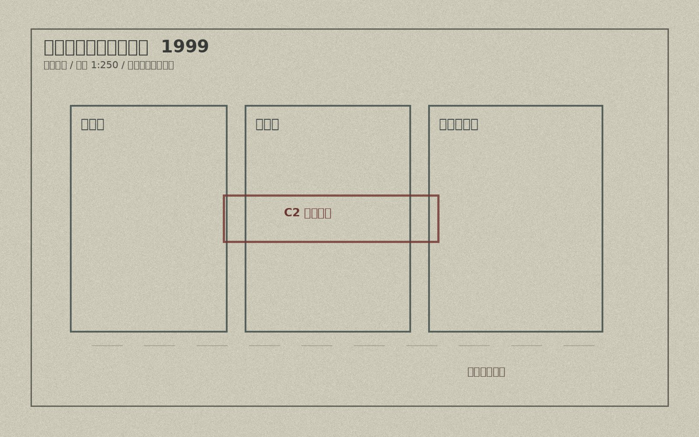

图纸阅览 / C区
下方三张图均为数字化扫描副本。2003年改造图在C2西侧画出一个高位设备夹层，并以细线表示从走廊进入的检修门；2006年消防总图把同一位置合并成封闭墙体，没有单独标注夹层。

1999原始总图：C2只画出直线型设备走廊。
档案管理员在2026年复核时确认，2003年竣工图并没有被撤销，只是没有同步修改到后来用于消防备案的总图。2006年搜寻记录中引用的图号正是CH-06-118-F。
2026年拆除项目的现场记录已经把两套图纸差异列为“历史资料偏差”，施工编号为CD-2026-17。